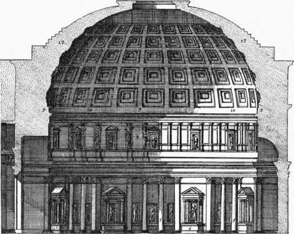
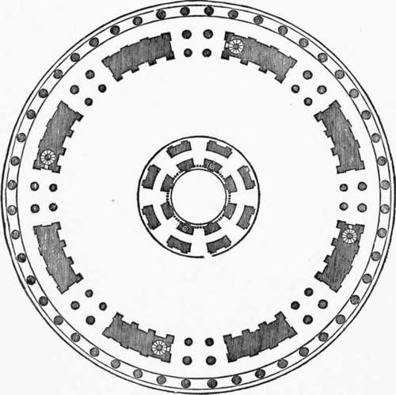

The Dome Of St. Peter's. Part 2
Description
This section is from the book "Character Of Renaissance Architecture", by Charles Herbert Moore. Also available from Amazon: Character of Renaissance Architecture.
The Dome Of St. Peter's. Part 2
In seeking guidance from the antique two monuments in particular appear to have appealed to him as offering appropriate suggestions, the Pantheon and the Basilica of Maxentius, then called the Temple of Peace. The first of these monuments gave the model for a mighty hemispherical vault securely suspended over a vast area, while the second offered an example of a stupendous system of piers and arches. In maturing his great scheme with these models before him, he conceived the idea of uniting their respective sublimities, and is said to have boasted that he would set the Pantheon upon the arches of the Temple of Peace. While it is probable that the majestic elevation of the dome of Florence haunted his imagination, and led him to feel that he must lift his dome high, he wished, at the same time, to give the design a more classic character, and a sounder structural form. In striving to accomplish this double purpose Bramante produced a scheme for an elevated dome of almost thoroughly Roman character, and at the same time of imposing external effect. The architect Serlio gives an illustration1 (Fig. 23) of this project which is highly instructive.2 A comparison of it with the scheme of the Pantheon shows a close likeness in essential forms and adjustments. The points of difference are mainly such as Bramante's desire to make his dome externally conspicuous would require. In the Pantheon (Fig. 24) the dome springs from within the massive drum at a level far below the external cornice, so that the wall above the springing forms a solid and powerful abutment, reaching almost to the haunch of the vault. Above this a stepped mass of masonry, diminishing in thickness as it rises, is carried well over the haunch, effectively overcoming any tendency to yield to the force of thrust. A Corinthian order, surmounted by an attic, is carried around the wall of the interior,3 while the wall on the outside is plain.

Fig. 23. — Bramante's dome for St. Peter's, from Serlio.
Fig. 24.— The Pantheon.
In Bramante's project every essential feature of this ancient monument is reproduced, but with modifications which give a different aspect to the design as a whole, but do not constitute any such radical departure from the principles embodied in the Pantheon as those wrought by Brunelleschi in adapting the scheme of the Baptistery to that of the dome of the cathedral of Florence. In order to secure greater elevation for external effect, the architect has raised the springing level of the dome considerably, though he has still kept it below the top of the drum. The drum itself is of great thickness, and forms a strong continuous abutment at the springing, and the haunch of the vault is loaded with steps of masonry as in the Pantheon, though not quite so heavily. The lower half of the drum is a solid wall resting on the pendentives, while the upper part, which is less than half as thick (Fig. 25), is pierced with eight pletion of this interior are of no concern here. The arrangement was practically the same in Bramante's time as it is now.
Fig. 25. — Plan of Bramante's dome, from Serlio.
Wide openings, and its inner and outer faces are each adorned with an order of pilasters alternating with free-standing columns in the intervals. The upper wall stands on the inner circumference of the massive lower ring, while an encircling order of Corinthian columns is ranged on its outer circumference, and gives an effect of lightness and elegance to the exterior, which, together with the lantern at the crown of the dome, goes far to disguise the real likeness of the whole to the Pantheon scheme.
In these changes and additions Bramante was governed by a clear understanding of the exigencies of his project. He was obliged to raise the internal order from the place on the ground level which it occupies in the Pantheon, to the upper part of the drum, in order to provide a solid foundation resting on the pendentives; and this compelled him to eliminate the attic story of the Pantheon scheme. The most radical change was that of substituting the open colonnade for the solid wall on the outside of the drum. It is doubtful, I think, whether the drum thus lightened would have had enough strength to withstand the enormous thrusts of such a dome.
Like the dome of the Pantheon, Bramante's dome was to be hemispherical and to have an opening at its crown. Over this he was to set the lantern which in outline recalls that of Brunelleschi, though it is of lower proportions, in keeping with the less elevated form of his dome, and has a small hemispherical dome instead of a conical roof. The shape of the lantern accords well with the composition as a whole, and contributes much to the aspiring expression which was now demanded, without wholly contradicting the classical spirit that the architect was striving to maintain.
The structural merit of this scheme lies in what it has derived from the forms and adjustments of the Pantheon. Its weakness consists in the increased elevation, lifting the dome away from its abutment to such an extent that it may be questioned whether it could have been made safe without chains. The thrusts of a hemispherical dome are vastly more powerful than those of a vault of pointed outline, like the dome of Florence, but if properly abutted, as in the Pantheon,1 it is perfectly safe, and makes a better ceiling than a pointed vault. In reducing the efficiency of his abutment by raising the springing of the dome so high, the architect ought to have diminished the force of its thrust in a corresponding degree by giving it a pointed form. This would have made it more safe, but it would have been inconsistent with the classic Roman models to which he was striving to conform.
1 Some writers have supposed (cf. Middleton, Ancient Rome, Edinburgh, 1885, pp. 338-339) that the dome of the Pantheon is entirely of concrete, and without thrusts. We have no means of knowing its exact internal character, but there is reason to believe that it has some sort of an embedded skeleton of ribs and arches, with concrete filling the intervals. But if it were wholly of concrete, as Middleton affirms, it would not be safe without abutment; for, even supposing that a concrete vault may be entirely free from thrust in a state of integrity, there is always a chance of ruptures arising from unequal settlement, which might at once create powerful thrusts. However this may be, the fact is that the builders of the Pantheon took care to fortify it with enormous abutment, which would seem to show that they did not consider it free from thrust.
Continue to: